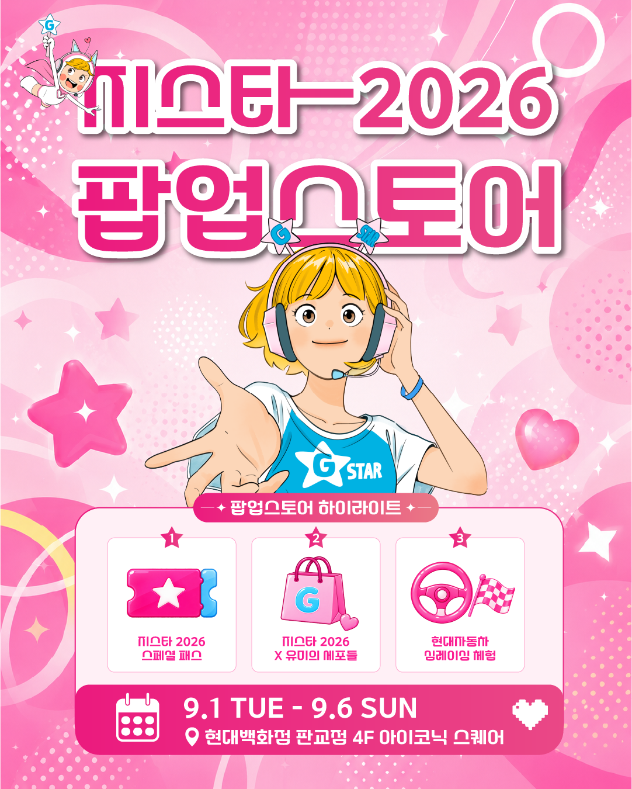

지스타 2026 판교 팝업스토어, 스페셜 패스 얼리버드는 9월 6일까지
지스타가 원래 있던 자리, 그러니까 벡스코를 벗어나 처음으로 백화점에 매장을 냈습니다. 헤럴드경제ㆍZDNetㆍ전자신문 등 여러 매체가 이번 팝업스토어를 지스타 역사상 처음 열리는 백화점 매장이라고 입을 모아 전하고 있는데요, 부산이 아니라 판교라 수도권에서는 훨씬 가볍게 들를 수 있게 됐죠. 그런데 여기서 파는 '스페셜 패스'가 지금 얼리버드 가격으로 풀려 있고, 이 가격은 9월 6일까지만 유효하다고 해서 오늘 기준으로 정리해서 알려드립니다.

일정ㆍ장소랑 하이라이트 3개가 이 한 장에 다 들어 있어서, 저는 이거 하나 저장해두고 계속 다시 봤습니다.
이미지: 헤럴드경제 · 지스타조직위원회 제공(기사 원문 캡션 표기)
1. 장소ㆍ기간은?
판교 팝업스토어는 현대백화점 판교점 4층 아이코닉 스퀘어에서 9월 1일(화)부터 9월 6일(일)까지 6일간 열립니다. 이 글을 쓰는 오늘(9월 2일) 기준으로도 아직 진행 중이고, 이번 주 일요일이면 끝나는 일정이라 여유가 그렇게 많지는 않아요. 벡스코가 아니라 백화점 안에 매장을 낸 게 지스타로서는 처음이라고 여러 매체가 입을 모으는데, 저도 직접 여러 기사를 찾아 대조해보니 다들 같은 표현을 쓰고 있더라고요.
2. 스페셜 패스, 뭐가 들었나?
스페셜 패스는 BTC(일반관람) 입장권ㆍ웹툰 '유미의 세포들' 콜라보 키링과 프로모션 카드ㆍ크림(KREAM) 바우처, 이렇게 세 가지를 하나로 묶은 번들 상품입니다.
- BTC 입장권 — 지스타 일반관람용 입장권 1매
- '유미의 세포들' 콜라보 굿즈 — 키링 + 프로모션 카드
- 크림 바우처 — 크림에서 쓸 수 있는 상품권 성격의 바우처
크림(KREAM)은 한정판 스니커즈나 인기 굿즈를 사고파는 리셀 플랫폼으로 이름이 알려져 있는데, 이번엔 단순 판매처가 아니라 지스타조직위원회와 손잡고 이 스페셜 패스를 선보이는 협업 파트너로 들어왔습니다. 굿즈 구성이 키링ㆍ프로모션 카드까지만 보도로 확인돼서, 그 이상 품목이나 수량은 제가 넘겨짚지 않고 여기까지만 정리했습니다.
3. 얼리버드 지나면 얼마나 비싸지나?
지금(판교 팝업, ~9/6) 가격과 9월 7일부터 크림 단독 판매가를 비교하면 이렇습니다.
| 구분 | 지금 (판교 팝업, ~9/6) | 9/7부터 (크림 단독 정가) |
|---|---|---|
| 일반 | 20,000원 | 25,000원 |
| 청소년 | 10,000원 | 15,000원 |
할인율로 따지면 일반은 20%, 청소년은 33.3% 할인입니다. 매체마다 "최대 33% 할인"이라고 크게 붙여 쓰던데, 이건 청소년 기준 최댓값이고 일반권은 20%라는 걸 같이 알아두시면 좋을 것 같아요. 크림 재고가 소진되면 정가로도 못 산다고 하니 참고하시고요.
여기서 절대 헷갈리면 안 되는 게 하나 있습니다. 지스타 본행사 BTC 단독 입장권(패스랑 별개로, 딱 입장권 한 장만) 정가는 성인 1만8,000원ㆍ청소년 8,000원인데, 이건 위 표의 '정가'와는 완전히 다른 상품이에요. 위 표는 어디까지나 스페셜 패스(입장권+굿즈+바우처 세트) 가격이고, 크림 판매가를 기준으로 한 할인율이라는 점 헷갈리지 마세요.
정리하면, 스페셜 패스의 얼리버드 가격은 입장권 한 장만 사는 것보다 굿즈ㆍ바우처까지 얹어서 더 저렴하게 가져가는 구성이고, 9월 29일 이후 따로 뜨는 BTC 단독 입장권은 그냥 입장만 하면 되는 분들을 위한 별개 상품이라고 보면 됩니다. 얼리버드를 놓치고 나중에 크림 정가로 스페셜 패스를 사더라도 굿즈ㆍ바우처 혜택은 그대로 남아 있으니, 입장권만 필요하다면 굳이 스페셜 패스를 고집하지 않고 9월 29일 일반 예매로 넘어가는 것도 방법이에요.
4. 왜 하필 '유미의 세포들'인가
단순히 굿즈만 붙인 콜라보가 아니라, '유미의 세포들'은 지스타 2026 공식 키비주얼에 실제로 쓰인 협업 IP입니다. 메트로서울 보도를 찾아 다시 읽어보니, 이번 팝업스토어에서 "지스타 2026 키비주얼에 활용된 '유미의 세포들' 협업 상품과 공식 상품도 공개"된다고 설명하고 있더라고요. 그러니까 이번 협업은 매장 한켠에 굿즈 코너 하나 차린 수준이 아니라, 올해 지스타를 대표하는 이미지 자체에 이 웹툰이 들어가 있다는 얘기입니다.
5. 팝업 안에 자동차도 있다?
네, 같은 판교 팝업 안에서 현대자동차와 함께하는 '심레이싱 현장 체험존'도 같이 운영됩니다. 관람객이 직접 앉아서 모빌리티 e스포츠를 체험해볼 수 있는 구성이라고 하는데요, 게임 전시장이 아니라 백화점이라는 공간에서 자동차 브랜드까지 붙었다는 게 이번 지스타가 게임 밖으로 저변을 넓히려는 콘셉트를 잘 보여주는 대목이라고 생각합니다. 게임 팬만이 아니라 판교를 지나던 사람도 발을 멈출 만한 구성인 셈이죠.
6. 11월 벡스코 본행사랑은 다른 건가?
네, 완전히 별개의 일정입니다. 지스타 2026 본행사는 11월 19일(목)부터 22일(일)까지 부산 벡스코에서 한국게임산업협회 주최로 열리고, 이번 판교 팝업(9/1~6)은 그보다 두 달 넘게 앞서 여는 사전 행사예요. 저도 지스타 공식 홈페이지를 직접 다시 열어서 11월 일정을 대조해봤는데, 판교 팝업 얘기는 따로 없이 부산 벡스코 본행사 날짜만 명시돼 있었습니다.
다만 스페셜 패스에 BTC 입장권이 포함돼 있어서, 이 패스를 사두면 사실상 본행사 일반관람 입장권을 미리 확보해두는 셈이긴 합니다. 이 입장권이 11월 나흘 중 정확히 어느 날짜에 쓰이는지, 발권ㆍ교환 방식이 어떻게 되는지 같은 세부 조건까지는 보도만으로 다 확인되진 않아서 🔍 공식 안내 확인 필요 정도로 남겨둘게요. 이 부분이 왜 중요하냐면, 입장권만 미리 챙겨놨다가 정작 원하는 날짜에 못 쓰는 상황이 생기면 곤란해서인데요, 지금까지 나온 보도자료나 조직위 공지에는 '나흘 중 하루를 지정해야 한다'는 말도, '나흘 아무 날에나 쓸 수 있다'는 말도 없습니다. 즉 어느 쪽인지조차 아직 공식적으로 밝혀지지 않았다는 뜻이라, 확정 안내가 나오는 대로 이 글도 업데이트하겠습니다.
참고로 지스타 본행사 BTC 입장권의 일반 예매는 9월 29일부터 지스타 공식 홈페이지에서 따로 시작된다고 확인했습니다. 그만큼 이번 판교 팝업 스페셜 패스는 일반 예매보다 한 달 가까이 먼저 입장권을 챙길 수 있는 얼리 루트인 셈이죠. 판교까지 가기 어려운 분이라면 급하게 서두르지 않고 9월 29일 일반 예매를 기다렸다가 입장권만 따로 사는 것도 방법입니다. 다만 그 경우엔 얼리버드 할인이나 굿즈ㆍ바우처 혜택은 없다는 것도 같이 알아두세요.
크림 앱이나 사이트에서 직접 검색해서 확인해보려고 했는데, 제가 접속했을 땐 페이지가 잘 안 열리더라고요. 잘 열리면 좋겠지만, 안 열리는 경우엔 얼리버드 기간 안에는 그냥 판교 현장에서 사는 게 제일 확실할 것 같습니다.
② 스페셜 패스 얼리버드가 = 일반 2만원ㆍ청소년 1만원(9/7부터 크림 정가 2만5천ㆍ1만5천원)
③ BTC 단독 입장권 일반 예매는 9월 29일부터 지스타 공식 홈페이지에서 별도 시작
얼리버드 가격으로 살 수 있는 건 이번 주 일요일, 9월 6일까지입니다. 그 뒤로는 크림에서 정가로만 풀리니까, 스페셜 패스에 관심 있으면 이번 주 안에 챙기시는 걸 추천드려요. 정식 지스타는 11월 19일 벡스코에서 다시 만나겠습니다!
참고한 곳
· 지스타(G-STAR) 공식 홈페이지 — 참가 안내